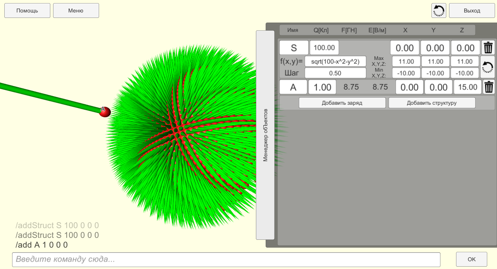
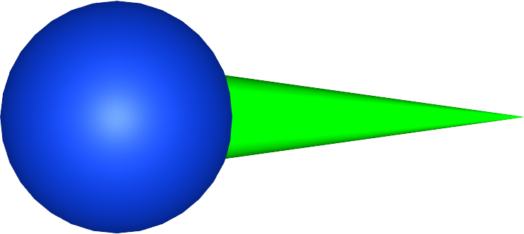
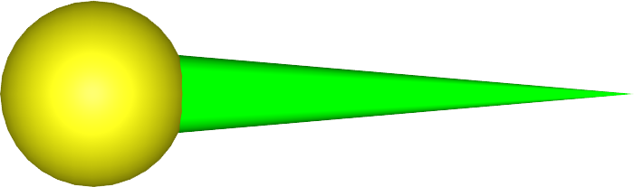

3DCoulomb – кросс платформенное приложение, его
использование возможно на операционных системах Windows, Linux, Android, а также в браузере. Для управления
используются клавиатура, мышь или сенсорный экран. Интерфейс программы состоит из следующих частей:

Окно программы
Графического окна, на котором происходит построение заданных элементов.
Командной строки с помощью которой происходит взаимодействие с элементами программы.
Окна «Помощь», открываемого одноименной кнопкой, в котором содержится краткая информация по работе с
программой.
Кнопки «Выход».
Кнопки «Пересчитать силы»
Меню, в нём можно сохранить и загрузить положение зарядов. Файлы сохранений находятся в папке Saves
директории программы. Их можно открыть с помощью любого текстового редактора, данные хранятся в формате
XML, вследствие чего их удобно редактировать. В папке сохранений изначально находятся примеры.
Менеджера объектов, в нем отображаются уже созданные объекты. Через него можно добавить, удалить или
редактировать объект.
В данный момент для пользователя доступны три элемента:
Заряд – имеет заряд, который отображается как размер заряда и его цвет. Для нее рассчитываются
сила
Кулона и напряженность, отображаемые как модуль в подписи около заряда и как направление (в виде зелёной
стрелки).

Отрицательный заряд и вектор силы кулона
Точка – её заряд равен нулю, а рассчитываемыми величинами являются потенциал и потенциальная
энергия.

Нейтральный заряд и вектор напряженности
Структура – Массив зарядов сгенерированных по формуле введённой пользователем. Для прорисовки
нажмите на
кнопку «Обновить» в менеджере и подождите.
Для перемещения камеры используйте кнопки WASD, для вращение зажимайте ПКМ, для зума используйте
колесико мышки.
Можете загрузить примеры из меню или сохранить свои.
Для управлением зарядами и структурами используйте менеджер объектов:
Нажмите кнопку добавить.
Введите необходимые данные.
В случае с структурами нажмите кнопку обновить и подождите несколько секунд до прорисовки.
Нажав на заряд можно передвигать его вдоль осей с помощью стрелок.
Также можно испоьзовать следующие консольные команды:
/add name q x y z используется для создания зарядов и точек.
/addStruct name q func mix miy minz maxx maxy maxz delta аналогично add, но для создания
структур.
/remove name используется для удаления объектов.
/getf name выводит силу Кулона в векторном виде.
/getw выводит энергию всей системы.
Вышеперечисленные команды используют следующие аргументы:
name – имя заряда или точки, используется для индификации.
q – заряд в Кулонах.
x y z – координаты в метрах.
func - функция вида f(x,y)= для генерации структуры.
delta - шаг точек при генерации.
Доступные математические функции: sin, cos, tg, ctg, sqrt, abs.